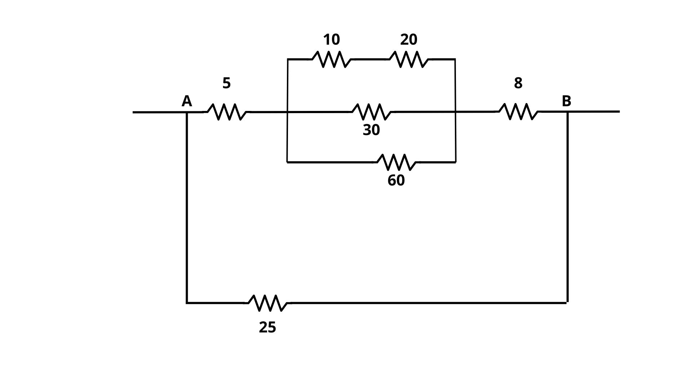
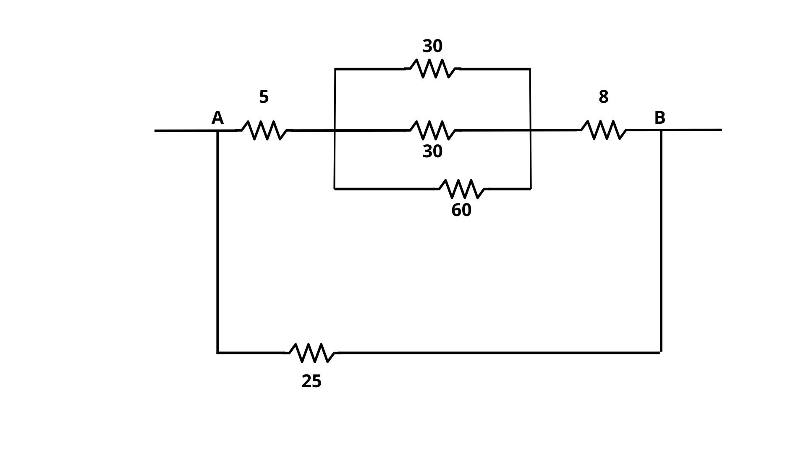
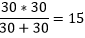
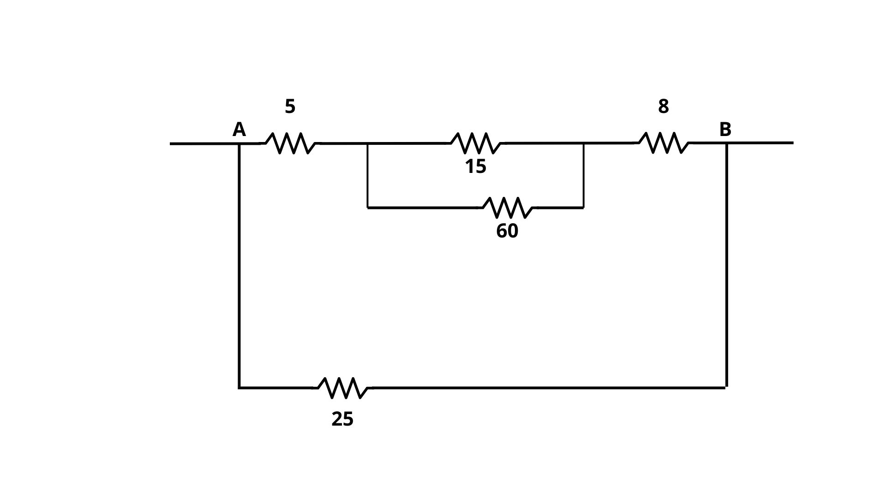
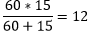
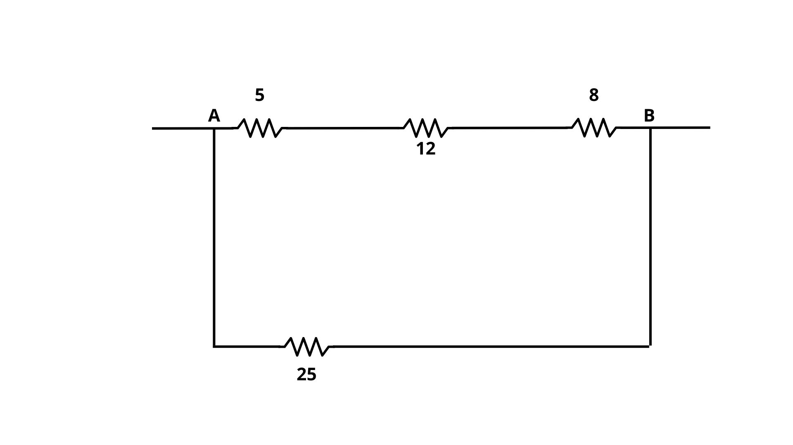
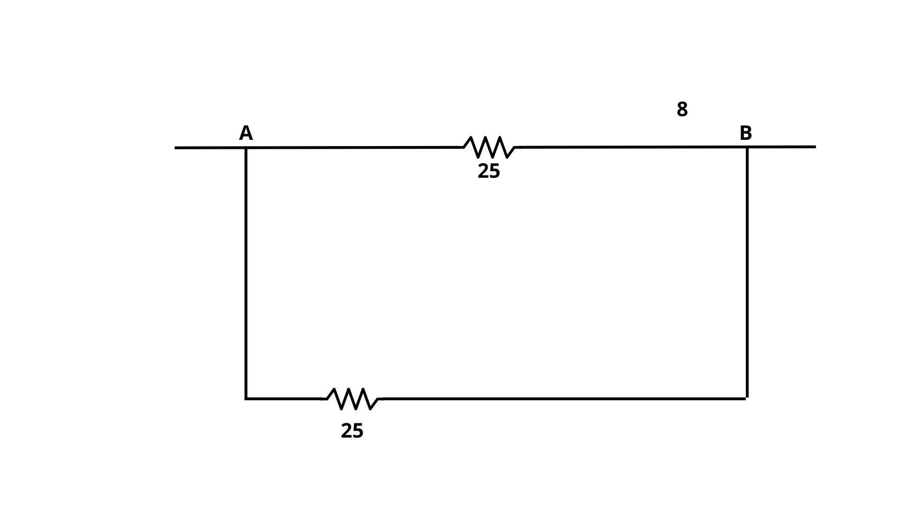
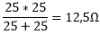
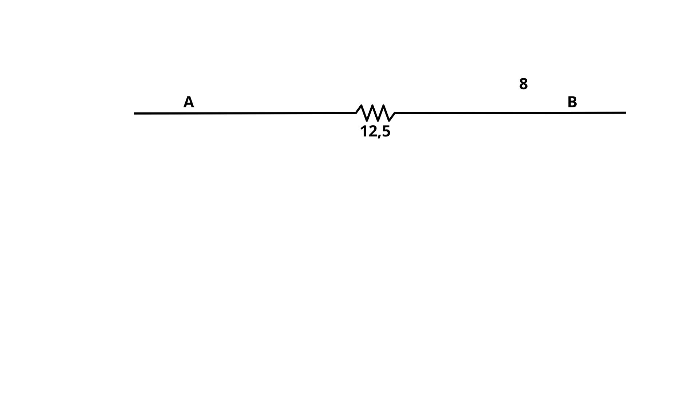

Resolução Comentada Física
Resolva o seguinte exercício:

Para resolver, primeiro é necessário transformar as duas resistências em série para uma única
10 + 20 = 30
O circuito firará da seguinte maneira:
Após resolver, agora precisamos transformar as duas resistências em paralelo em uma única
O circuito ficará da seguinte forma:
Após resolver essa primeira etapa, precisamos transformar a resistência em paralelo em uma associação em série.
O circuito ficará da seguinte forma:
Após esse processo, precisamos descobrir a resistência equivalente da associação em série
5 + 12 + 8 = 25Ω
O circuito ficará da seguinte maneira:
Descoberta a resistência equivalente da associação em série, vamos descobrir a resistência equivalente do circuito:
O circuito ficará da seguinte maneira:
